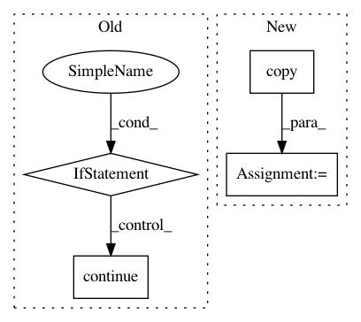

ed9fb224f3aa4336d066cbbe4b9abf26b24f8535,python/edl/utils/watcher.py,Watcher,_watcher,#Watcher#,58
Before Change
new_cluster = Cluster()
with self._lock:
if self._ranks is None:
self._ranks = ranks
self._cluster.from_json(ranks)
//logger.info("clusters:{}".format(self._cluster))
continue
if not self._is_cluster_changed(self._ranks, ranks):
time.sleep(1)
continue
After Change
with self._lock:
// update the cluster info.
self._cluster = copy.copy(self._new_cluster)
time.sleep(3)
@property
In pattern: SUPERPATTERN
Frequency: 3
Non-data size: 4
Instances
Project Name: PaddlePaddle/edl
Commit Name: ed9fb224f3aa4336d066cbbe4b9abf26b24f8535
Time: 2020-09-02
Author: weibao.gong@gmail.com
File Name: python/edl/utils/watcher.py
Class Name: Watcher
Method Name: _watcher
Project Name: etal/cnvkit
Commit Name: 1281963269c819f22fed98583526df8946d18b4a
Time: 2016-04-20
Author: eric.talevich@gmail.com
File Name: cnvlib/commands.py
Class Name:
Method Name: do_import_theta
Project Name: home-assistant/home-assistant
Commit Name: 17f0fb69bd9449cdafce9e236e342929fdcc6b5b
Time: 2016-11-29
Author: pascal.vizeli@syshack.ch
File Name: homeassistant/components/homematic.py
Class Name:
Method Name: _system_callback_handler